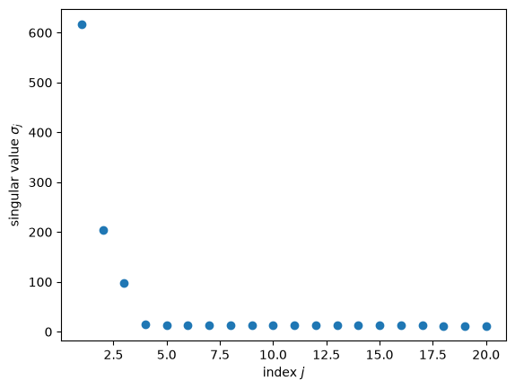
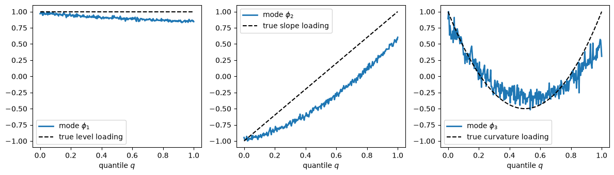
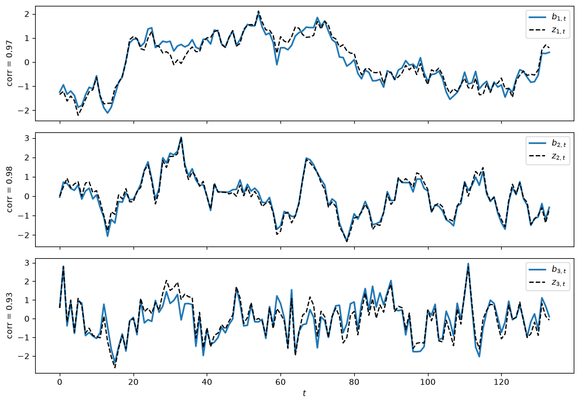

6. 向量自回归和动态模态分解#
6.1. 概述#
本讲座将我们在 奇异值分解 讲座中学到的计算方法应用于
一阶向量自回归（VAR）
动态模态分解（DMD）
DMD 与一阶 VAR 之间的联系
[Sargent et al., 2026] 详细研究了这些联系。
我们尤其关注高瘦型数据集，即变量数量 \(m\) 超过时间周期数量 \(n\) 的数据集。
这类数据集很常见。
例如，[Sargent et al., 2026] 研究了季度消费者支出调查数据，涉及三个横截面——私人收入、税后转移支付收入和消费——各自的100个分位数，以及总收入增长。
这使得他们拥有 \(m = 301\) 个变量，但只有 \(n = 133\) 个季度观测值。
他们使用 DMD 为这301个变量估计了一个秩为 \(3\) 的一阶 VAR。
在此过程中，我们将学到
DMD 计算的是一阶 VAR 系数矩阵的降秩估计量
该估计量是一种主成分回归：将横截面压缩为少数主成分，然后用它们对下一期数据进行回归
DMD 模态是估计系数矩阵的右特征向量
与之匹配的左特征向量可以廉价地计算出来，它们与模态一起给出了估计 VAR 的精确模态表示，这对预测和计算长期响应非常有用
我们将使用以下导入。
import numpy as np
import matplotlib.pyplot as plt
6.2. 一阶向量自回归#
我们希望拟合一个一阶向量自回归
其中 \(\epsilon_{t+1}\) 是均值向量为零、协方差矩阵为单位矩阵的独立同分布 \(m \times 1\) 随机向量序列在时间 \(t+1\) 处的分量，而 \(m \times 1\) 向量 \(X_t\) 为
这里 \(\cdot^\top\) 表示矩阵转置，\(X_{i,t}\) 是时间 \(t\) 时的变量 \(i\)。
方程 (6.1) 不含常数项。
这是因为我们假设每个变量都已经经过变换——例如，通过取差分、减去一个共同趋势、以及减去其时间序列均值——以使 \(\{X_t\}\) 可以被视为一个均值为零的协方差平稳过程。
例如，[Sargent et al., 2026] 从每个对数分位数中减去对数私人收入的横截面均值，使用该均值的增长率作为一个附加变量，然后从所有变量中减去时间序列均值。
我们的数据被组织成一个 \(m \times (n+1)\) 的矩阵 \(\tilde X\)
其中对于 \(t = 1, \ldots, n+1\)，\(m \times 1\) 向量 \(X_t\) 由 (6.2) 给出。
由 \(\tilde X\)，我们构造两个 \(m \times n\) 的矩阵
以及
这里 \('\) 是矩阵 \(X'\) 名称的一部分，并不表示矩阵转置。
在构造 \(X\) 和 \(X'\) 时，我们在每种情况下都从 \(\tilde X\) 中删除了一列：对于 \(X\) 是删除最后一列，对于 \(X'\) 是删除第一列。
我们希望估计一个由 (6.1) 构成的系统，该系统由 \(m\) 个最小二乘回归组成，即所有变量对所有变量的一期滞后值的回归。
(6.1) 的第 \(i\) 个方程是 \(X_{i,t+1}\) 对向量 \(X_t\) 的回归。
因此，估计量 \(\hat A\) 的第 \(i\) 行是 \(X_{i,t+1}\) 对 \(X_{j,t}, j = 1, \ldots, m\) 的回归系数构成的 \(1 \times m\) 向量。
最小二乘估计量 \(\hat A\) 求解
其中 \(\| \cdot \|_F\) 表示矩阵的弗罗贝尼乌斯范数
我们用 \(p \leq \min(m, n)\) 表示 \(X\) 的秩。
(6.3) 的最小范数解为
其中 \(X^+\) 是 \(X\) 的 穆尔-彭罗斯广义逆矩阵。
我们关注两种情形
\(n \gg m\)，即时间序列观测值 \(n\) 远多于变量数 \(m\)
\(m \gg n\)，即变量数 \(m\) 远多于时间序列观测值 \(n\)
短胖型情况：
当 \(n \gg m\) 且 \(X\) 的行线性无关时，\(X X^\top\) 具有逆矩阵，广义逆矩阵 \(X^+\) 为
这里 \(X^+\) 是满足 \(X X^+ = I_{m \times m}\) 的右逆。
在这种情形下，问题 (6.3) 有唯一解，公式 (6.4) 变为
这一最小二乘回归系数公式在计量经济学中被广泛用于估计向量自回归。
公式 (6.5) 的右边正比于 \(X_{t+1}\) 和 \(X_t\) 的经验交叉二阶矩矩阵，乘以 \(X_t\) 的二阶矩矩阵的逆。
高瘦型情况：
当 \(m \gg n\) 且 \(X\) 的列线性无关时，\(X^\top X\) 具有逆矩阵，广义逆矩阵 \(X^+\) 为
这里 \(X^+\) 是满足 \(X^+ X = I_{n \times n}\) 的左逆。
在这种情形下，公式 (6.4) 变为
如果我们使用公式 (6.6) 来计算 \(\hat A X\)，会发现
因此回归方程完全拟合。
这是欠定最小二乘模型中的典型结果。
事实上，每一个满足 \(N X = 0\) 的矩阵 \(\check A = \hat A + N\) 也能完全拟合，因此问题 (6.3) 有无穷多个解。
公式 (6.6) 选取的是弗罗贝尼乌斯范数最小的那个解。
完美的样本内拟合是一个警示信号：当系数数量多于观测值数量时，估计量 \(\hat A\) 不仅在追踪信号，也在追踪噪声。
我们将通过构造一个不再完全拟合的降秩估计量来应对这一问题。
6.2.1. 用 SVD 计算 \(X^+\)#
计算广义逆矩阵 \(X^+\) 的一种高效方法是从简化奇异值分解开始
其中 \(U\) 是 \(m \times p\) 的矩阵，\(\Sigma\) 是由正奇异值 \(\sigma_1 \geq \sigma_2 \geq \cdots \geq \sigma_p > 0\) 构成的 \(p \times p\) 对角矩阵，\(V\) 是 \(n \times p\) 的矩阵。
正如我们在 奇异值分解 中所看到的，对于简化 SVD
\(U^\top U = I_{p \times p}\) 且 \(V^\top V = I_{p \times p}\)，但是
除非 \(p = m\)，否则 \(U U^\top \neq I_{m \times m}\)；除非 \(p = n\)，否则 \(V V^\top \neq I_{n \times n}\)。
对于任意秩 \(p\)，\(X\) 的穆尔-彭罗斯广义逆矩阵为
当 \(X\) 的列线性无关，即 \(p = n\) 且 \(V\) 为方正交矩阵时，我们可以确认公式 (6.8) 与我们先前的公式一致：
其中第三行使用了 \(V^{-1} = V^\top\)。
公式 (6.9) 显示出 \(\hat A\) 的一个弱点。
较小的奇异值 \(\sigma_j\) 通过 \(1/\sigma_j\) 的形式进入公式。
因此，数据 \(X\) 变化非常小的方向会获得非常大的权重，这会放大噪声。
6.3. 降秩向量自回归#
一种补救方法是只保留 \(r < p\) 个最大的奇异值。
设 \(U_r\) 为由 \(U\) 的前 \(r\) 列组成的 \(m \times r\) 的矩阵，设 \(\Sigma_r\) 为 \(\Sigma\) 左上角的 \(r \times r\) 分块，设 \(V_r\) 为由 \(V\) 的前 \(r\) 列组成的 \(n \times r\) 的矩阵。
我们对 \(A\) 的 秩-\(r\) 估计量 为
\(m \times m\) 的矩阵 \(\hat A_r\) 的秩至多为 \(r\)。
注意，\(V_r \Sigma_r^{-1} U_r^\top\) 是 \(\hat X_r = U_r \Sigma_r V_r^\top\) 的广义逆矩阵，而 \(\hat X_r\) 正是 奇异值分解 中埃卡特-杨定理所描述的 \(X\) 的最佳秩-\(r\) 近似。
于是 \(\hat A_r = X' \hat X_r^+\)：我们通过在最小二乘公式 \(\hat A = X' X^+\) 中用 \(X\) 的埃卡特-杨近似代替 \(X\)，得到了秩-\(r\) 估计量。
这正是 动态模态分解 所计算的估计量。
动态模态分解由 [Schmid, 2010] 引入。
你可以在 [Kutz et al., 2016] 和 [Brunton and Kutz, 2019]（第7.2节）中阅读相关内容。
与 \(\hat A_r\) 相关的拟合残差及其协方差矩阵为
因此，我们估计得到的秩-\(r\) 向量自回归为
当 \(r < p\) 时，回归不再完全拟合，\(\hat \Omega\) 也不再为零。
在应用中，\(r\) 通常非常小，例如三个或更少。
选择 \(r\) 的一种常见方法是绘制奇异值 \(\sigma_1, \sigma_2, \ldots\) 的图像，并在它们不再快速下降而趋于平稳的位置进行截断——即所谓的”肘部法则”。
[Sargent et al., 2026] 使用该法则选择了 \(r = 3\)。
6.3.1. 作为主成分回归的解释#
我们可以从统计学角度解释公式 (6.10)。
定义 \(r \times 1\) 向量
其各分量是截面数据 \(X_t\) 的前 \(r\) 个 主成分（参见 奇异值分解 中关于主成分分析的讨论）。
将它们堆叠起来可得到 \(r \times n\) 的矩阵 \(F = U_r^\top X = \Sigma_r V_r^\top\)。
\(X_{t+1}\) 对 \(f_t\) 的最小二乘回归具有系数矩阵
因此
类似地，\(f_{t+1} = U_r^\top X_{t+1}\) 对 \(f_t\) 的最小二乘回归具有 \(r \times r\) 系数矩阵
因此 \(\tilde A\) 是 \(r\) 个主成分的一阶向量自回归系数矩阵。
注意 \(\tilde A = U_r^\top \hat A_r U_r\)。
因此，动态模态分解分两步进行：
利用 \(X\) 本身的变异，将截面数据 \(X_t\) 压缩为 \(r\) 个主成分 \(f_t\)
将下一期数据 \(X_{t+1}\) 对这些主成分进行回归
统计学家将此称为 主成分回归。
它类似于 [Stock and Watson, 2002] 的”扩散指数”预测方法。
备注
估计量 \(\hat A_r\) 并非 使 \(\| X' - \check A X \|_F\) 最小化的秩-\(r\) 矩阵。
那个最小化矩阵是 [Anderson, 1951] 所提出的 降秩回归 估计量。
它选取能够最好地预测 \(X_{t+1}\) 的 \(r\) 个方向，而 \(\hat A_r\) 则使用能够最好地描述 \(X_t\) 的 \(r\) 个方向。
练习 6.2 比较了这两种估计量。
6.4. DMD 算法#
下面是 DMD 算法。
计算约简奇异值分解 \(X = U \Sigma V^\top\)。
保留 \(r\) 个最大的奇异值，从而构成 \(U_r\)、\(\Sigma_r\) 和 \(V_r\)。
构成 \(r \times r\) 的矩阵 \(\tilde A = U_r^\top X' V_r \Sigma_r^{-1}\) 并计算其特征分解
(6.14)#\[ \tilde A W = W \Lambda \]其中 \(\Lambda\) 是由特征值 \(\lambda_1, \ldots, \lambda_r\) 组成的对角矩阵，\(W\) 的列是对应的特征向量。
构成 \(m \times r\) 的矩阵 \(\Phi\) 和 \(r \times m\) 的矩阵 \(\Psi\)
(6.15)#\[ \Phi = X' V_r \Sigma_r^{-1} W, \qquad \Psi = (W \Lambda)^{-1} U_r^\top \]
\(\Lambda\) 对角线上的特征值 \(\lambda_i\) 称为 DMD 特征值，\(\Phi\) 的列 \(\phi_i\) 称为 DMD 模态。
我们将在下文看到，\(\Psi\) 的行 \(\psi_i\) 是与之匹配的左特征向量。
请注意，其中的主要计算工作在于对 \(m \times n\) 的矩阵 \(X\) 进行奇异值分解，以及对较小的 \(r \times r\) 的矩阵 \(\tilde A\) 进行特征分解。
我们完全不需要构造或分解 \(m \times m\) 的矩阵。
在整个过程中，我们假设 \(\tilde A\) 具有 \(r\) 个线性无关的特征向量和非零特征值，这是一般情形。
矩阵 \(\tilde A\) 是实矩阵但不是对称矩阵，因此某些特征值可能以共轭复数对的形式出现。
在这种情况下，\(\Phi\) 的相应列和 \(\Psi\) 的相应行也会以共轭复数对的形式出现，而诸如 \(\Phi \Lambda^j \Psi\) 之类的乘积则是实数。
对于复矩阵，我们用 \(\cdot^*\) 表示共轭转置。
备注
[Tu et al., 2014] 以不同的方式对模态进行缩放，将其定义为 \(\Phi \Lambda^{-1}\) 的列。
在这种缩放下，与之匹配的左特征向量是 \(\Lambda \Psi = W^{-1} U_r^\top\) 的行。
对某一模态及其左特征向量按相反方向进行重新缩放，不会改变下文中的任何公式。
6.5. 右特征向量：DMD 模态#
[Tu et al., 2014] 中的以下结果解释了为什么 \(\Phi\) 的列被称为模态。
命题 6.1
\(\Phi\) 的列是 \(\hat A_r\) 的特征向量：
Proof. 利用公式 (6.10)、(6.13) 和 (6.15)，
对各列取相等关系，可得 \(\hat A_r \phi_i = \lambda_i \phi_i\)（\(i = 1, \ldots, r\)）。
我们还可以进一步说明。
将 \(\hat A_r\) 写为 \(B U_r^\top\)，其中 \(B = X' V_r \Sigma_r^{-1}\) 是 \(m \times r\) 的矩阵。
因为 \(B U_r^\top\) 的非零特征值与 \(U_r^\top B = \tilde A\) 的特征值一致，所以 \(\hat A_r\) 的特征值为 \(\lambda_1, \ldots, \lambda_r\)，再加上 \(m - r\) 个零特征值。
因此，估计的 VAR (6.12) 稳定当且仅当 \(\max_i |\lambda_i| < 1\)，该条件可以通过一个 \(r \times r\) 的矩阵来验证。
（另见 [Brunton and Kutz, 2022]，第 238 页。）
6.5.1. 投影模态#
[Schmid, 2010] 最初使用的是投影模态（projected modes）\(U_r W\)，而非 \(\Phi\)。
因为 \(U_r^\top \Phi = \tilde A W = W \Lambda\)，所以有
因此，在尺度意义下，投影模态是模态 \(\Phi\) 向 \(U_r\) 的列空间的正交投影。
只有当 \(\Phi = U_r W \Lambda\) 时，即 \(\Phi\) 的列位于 \(U_r\) 的列空间中时，投影模态才是 \(\hat A_r\) 的特征向量。
但这一点未必成立，因为 \(\hat A_r U_r W = \Phi\)。
[Tu et al., 2014] 所提出的构造 \(\Phi = \hat A_r U_r W\) 在所有情况下都能得到 \(\hat A_r\) 的特征向量。
6.6. 左特征向量与模态表示#
现在我们来看 \(\Psi\) 的各行。
命题 6.2
设 \(\Psi = (W \Lambda)^{-1} U_r^\top\)。则
\(\Psi \Phi = I_{r \times r}\)
\(\Psi \hat A_r = \Lambda \Psi\)，因此 \(\Psi\) 的各行是 \(\hat A_r\) 的左特征向量
\(\hat A_r = \Phi \Lambda \Psi = \sum_{i=1}^r \lambda_i \phi_i \psi_i\)
Proof. 对于第一个命题，
对于第二个命题，由于 \(U_r^\top \hat A_r = U_r^\top X' V_r \Sigma_r^{-1} U_r^\top = \tilde A U_r^\top\)，
对于第三个命题，
定义 \(r \times 1\) 的模态坐标向量
计算 \(b_t\) 只需要主成分 \(f_t = U_r^\top X_t\) 以及一个 \(r \times r\) 的矩阵。
由于 \(\Psi \Phi = I\)，对 \(\hat A_r = \Phi \Lambda \Psi\) 进行迭代可得
因此，所估计的向量自回归模型 (6.12) 蕴含
且在给定 \(X_t\) 的条件下，对 \(X_{t+j}\) 的 \(j\) 步超前预测为
每个模态 \(\phi_i\) 贡献的分量，其振幅以速率 \(\lambda_i\) 按几何级数衰减。
矩阵 \(\Phi \Psi\) 是向 \(\Phi\) 的列空间上的斜投影。
它把 \(X_t\) 分解为 \(\Phi b_t\) 加上一个余项 \((I - \Phi \Psi) X_t\)，该余项会被 \(\hat A_r\) 映射为零，因为 \(\hat A_r (I - \Phi \Psi) = \Phi \Lambda \Psi - \Phi \Lambda \Psi \Phi \Psi = 0\)。
6.6.1. 一个看似可行但实际不可行的替代方案#
穆尔-彭罗斯广义逆矩阵 \(\Phi^+ = (\Phi^* \Phi)^{-1} \Phi^*\) 也满足 \(\Phi^+ \Phi = I\)。
向量 \(\check b_t = \Phi^+ X_t\) 是 \(X_t\) 对 \(\Phi\) 各列进行最小二乘回归所得的系数向量，而 \(\Phi \check b_t\) 则是 \(X_t\) 在 \(\Phi\) 的列空间上的正交投影。
这使得 \(\check b_t\) 成为描述每个模态在 \(X_t\) 中所占比重的一种自然的描述性概括。
但一般而言
因此在所估计的向量自回归模型下，\(\check b_t\) 的演化并不遵循 \(\check b_{t+1} = \Lambda \check b_t\)，并且 \(\Phi \Lambda^j \Phi^+ X_t\) 也不是向量自回归模型的预测值 \(\hat A_r^j X_t\)。
原因在于 \(\Phi^+\) 和 \(\Psi\) 都是 \(\Phi\) 的左逆，但它们各自的行所张成的空间不同：
\(\Phi^+\) 的各行张成的空间与 \(\Phi^*\) 的各行张成的空间相同
\(\Psi\) 的各行张成的空间与 \(U_r^\top\) 的各行张成的空间相同
这两个左逆重合，当且仅当 \(\Phi\) 与 \(U_r\) 的列空间相同。
\(\Phi\) 的列空间是 \(X' V_r\) 的列空间，它描述了数据在下一期会走向何方。
\(U_r\) 的列空间则由当前数据 \(X\) 变化最剧烈的 \(r\) 个方向张成。
这两个空间在特殊情形下会重合，例如当无噪声数据恰好由 \(r\) 个因子驱动时（见 练习 6.1），但一般情况下并不重合。
备注
公式 \((W \Lambda)^{-1} U_r^\top X_1\) 出现在 [Brunton and Kutz, 2022]（第240页）中，在该文献中它被作为 \(\Phi^+ X_1\) 的一种计算成本较低的近似而给出。
命题 6.2 表明，它恰恰是与所估计的向量自回归模型的动态一致的坐标向量。
6.6.2. 状态空间表示#
借助模态表示，我们可以将所估计的向量自回归模型写成一个具有 \(r \times 1\) 状态向量的线性状态空间系统。
定义
那么由 \(X_t = \hat A_r X_{t-1} + \hat a_t = \Phi \Lambda \Psi X_{t-1} + \hat a_t\) 以及 \(\hat x_{t+1} = \Lambda \Psi X_t\)，可得
其中我们利用了 \(\Psi \Phi = I\)。
在表示 (6.19) 中
状态 \(\hat x_t\) 是以主成分向量自回归模型 \(\tilde A\) 的特征向量基表示的滞后主成分向量
转移矩阵 \(\Lambda\) 是对角矩阵，因此状态的 \(r\) 个分量各自独立演化，只是冲击之间存在相关性
\(\Phi\) 的各列是 \(m\) 个观测变量在状态的 \(r\) 个分量上的载荷
一个 \(m \times 1\) 的残差向量 \(\hat a_t\) 同时驱动两个方程；根据最小二乘正规方程，它在样本内与 \(f_{t-1}\) 正交，因而也与 \(\hat x_t\) 正交
[Sargent et al., 2026] 将动态模态分解与此类线性状态空间模型联系了起来。
6.7. 长期响应#
模态表示 (6.17) 也简化了长期响应的计算。
如果对所有 \(i\) 都有 \(|\lambda_i| < 1\)，则
以及
矩阵 \(\Lambda (I - \Lambda)^{-1}\) 是对角矩阵，其元素为 \(\lambda_i / (1 - \lambda_i)\)。
因此长期响应由最持久的模态主导。
例如，[Sargent et al., 2026] 中的秩为3的 VAR 具有 DMD 特征值 \(0.963\)、\(0.865\) 和 \(0.547\)，对应的长期权重大致为 \(26\)、\(6.4\) 和 \(1.2\)。
类似 (6.20) 的公式出现在加性泛函中，这在 Additive and Multiplicative Functionals 中有所研究。
假设 \(X_t\) 的第一个分量是某个总量对数 \(Y_t\) 的增长率，并以其均值 \(\nu\) 的偏差来衡量，即 \(Y_{t+1} - Y_t - \nu = e_1 X_{t+1}\)，其中 \(e_1 = \begin{bmatrix} 1 & 0 & \cdots & 0 \end{bmatrix}\)。
如果 \(X_t\) 遵循 VAR (6.12)，那么 \(Y_t\) 可以分解为确定性趋势 \(t \nu\)、鞅 \(\sum_{j=1}^t H \hat a_j\) 和平稳成分 \(-g X_t\)，再加上一个常数，其中
[Sargent et al., 2026] 将此分解应用于总收入以及所有300个 CEX 分位数。
公式 (6.20) 意味着
因此计算 \(g\) 和 \(H\) 不需要对 \(m \times m\) 的矩阵求逆。
6.8. 模拟示例#
为了观察这些对象的实际作用，我们模拟了一个高瘦型数据集，该数据集与 [Sargent et al., 2026] 中的 CEX 数据具有一些共同特征。
该数据集有 \(m = 300\) 个横截面变量，我们可以将其视为由 \(q \in [0, 1]\) 索引的分位数，以及 \(n + 1 = 134\) 个季度观测值。
横截面由三个潜在因子 \(z_t\) 驱动，它们遵循具有对角转移矩阵的一阶向量自回归（VAR）过程
而观测数据为
其中 \(w_{t+1}\) 和 \(v_t\) 为标准正态随机向量。
\(G\) 的三列分别呈现出水平因子（使所有分位数一起变动）、斜率因子（使低分位数和高分位数朝相反方向变动）以及曲率因子（使尾部相对于中间部分变动）的形态。
以下代码用于模拟数据。
def simulate_data(m=300, T=134, D_diag=(0.95, 0.80, 0.50), σ_v=0.5, seed=1234):
"""
Simulate an m x T data matrix driven by three latent AR(1) factors.
"""
rng = np.random.default_rng(seed)
q = np.linspace(0, 1, m)
G = np.column_stack([np.ones(m), # level
2 * (q - 0.5), # slope
6 * (q - 0.5)**2 - 0.5]) # curvature
d = np.array(D_diag)
k = len(d)
z = np.zeros((k, T))
z[:, 0] = rng.normal(size=k) / np.sqrt(1 - d**2)
for t in range(T - 1):
z[:, t+1] = d * z[:, t] + rng.normal(size=k)
X_tilde = G @ z + σ_v * rng.normal(size=(m, T))
return X_tilde, G, z, q
X_tilde, G, z, q = simulate_data()
X_tilde = X_tilde - X_tilde.mean(axis=1, keepdims=True) # demean each variable
X_tilde.shape
(300, 134)
下一个函数实现了 DMD 算法。
def dmd(X_tilde, r):
"""
Rank-r DMD of the m x (n+1) data matrix X_tilde.
"""
X, X_prime = X_tilde[:, :-1], X_tilde[:, 1:]
U, σ, Vt = np.linalg.svd(X, full_matrices=False)
U_r, σ_r, V_r = U[:, :r], σ[:r], Vt[:r, :].T
B = X_prime @ V_r / σ_r # X' V_r Σ_r^{-1}
A_tilde = U_r.T @ B # r x r VAR for principal components
λ, W = np.linalg.eig(A_tilde)
order = np.argsort(-np.abs(λ)) # most persistent modes first
λ, W = λ[order], W[:, order]
Φ = B @ W # DMD modes (right eigenvectors)
Ψ = np.linalg.solve(W * λ, U_r.T) # (W Λ)^{-1} U_r^T (left eigenvectors)
A_hat = B @ U_r.T # rank-r estimator of A
a_hat = X_prime - A_hat @ X # residuals
Ω_hat = a_hat @ a_hat.T / X.shape[1]
return dict(λ=λ, Φ=Φ, Ψ=Ψ, W=W, A_tilde=A_tilde, A_hat=A_hat,
Ω_hat=Ω_hat, σ=σ, U_r=U_r)
为了选择 \(r\)，我们绘制 \(X\) 的最大奇异值。
σ = np.linalg.svd(X_tilde[:, :-1], compute_uv=False)
fig, ax = plt.subplots()
ax.plot(np.arange(1, 21), σ[:20], 'o')
ax.set_xlabel('index $j$')
ax.set_ylabel(r'singular value $\sigma_j$')
plt.show()

奇异值在 \(j = 1, 2, 3\) 时迅速下降，随后趋于平稳，因此按照拐点法则，我们将 \(r\) 设为 3。
r = 3
res = dmd(X_tilde, r)
λ, Φ, Ψ, A_hat = res['λ'], res['Φ'], res['Ψ'], res['A_hat']
print("DMD eigenvalues: ", np.round(λ, 3))
print("true eigenvalues: ", np.array([0.95, 0.80, 0.50]))
DMD eigenvalues: [0.93 0.82 0.337]
true eigenvalues: [0.95 0.8 0.5 ]
两个持续性最强的特征值估计得很好。
持续性最弱的那个则向零方向产生偏差。
这是因为数据是对因子的含噪观测，所以 \(\{X_t\}\) 并不严格是一阶 VAR 过程；主成分 \(f_t\) 中的误差会削弱所估计的系数，这在持续性最弱的模态中表现得最为明显。
接下来我们验证 命题 6.1 和 命题 6.2，并检验 \(\Phi \Lambda \Phi^+\) 是否等于 \(\hat A_r\)。
Φ_pinv = np.linalg.pinv(Φ)
rel = lambda M: np.linalg.norm(M) / np.linalg.norm(A_hat)
print("max |A_hat Φ - Φ Λ| =", np.abs(A_hat @ Φ - Φ * λ).max())
print("max |Ψ Φ - I| =", np.abs(Ψ @ Φ - np.eye(r)).max())
print("max |Ψ A_hat - Λ Ψ| =", np.abs(Ψ @ A_hat - λ[:, None] * Ψ).max())
print("relative error, Φ Λ Ψ =", rel(A_hat - (Φ * λ) @ Ψ))
print("relative error, Φ Λ Φ^+ =", rel(A_hat - (Φ * λ) @ Φ_pinv))
max |A_hat Φ - Φ Λ| = 1.1796119636642288e-16
max |Ψ Φ - I| = 9.367506770274758e-16
max |Ψ A_hat - Λ Ψ| = 2.498001805406602e-16
relative error, Φ Λ Ψ = 2.2057829660379316e-16
relative error, Φ Λ Φ^+ = 0.0733762208636469
前四个数值在舍入误差范围内均为零，而 \(\Phi \Lambda \Phi^+\) 与 \(\hat A_r\) 的差距达到了百分之几。
现在让我们来看一下各个模态。
模态只能确定到某一比例因子，因此我们将每个模态归一化，使其最大绝对值为 1，并选择其符号以与 \(G\) 相应列（我们以同样方式进行归一化）保持一致。
def normalize(v):
return v / np.abs(v).max()
labels = ['level', 'slope', 'curvature']
Φ_real = np.real_if_close(Φ)
fig, axes = plt.subplots(1, 3, figsize=(12, 3.5))
for i, ax in enumerate(axes):
g_i = normalize(G[:, i])
φ_i = normalize(Φ_real[:, i])
φ_i *= np.sign(φ_i @ g_i)
ax.plot(q, φ_i, lw=2, label=rf'mode $\phi_{i+1}$')
ax.plot(q, g_i, 'k--', label=f'true {labels[i]} loading')
ax.set_ylim(-1.1, 1.1)
ax.set_xlabel('quantile $q$')
ax.legend()
plt.tight_layout()
plt.show()

每个模态都接近于某一真实载荷模式，但并不完全相同。
由于抽样误差，所估计的特征向量会在一定程度上混合真实因子，这在第二个模态中表现得最为明显。
接下来我们将模态坐标 \(b_t = \Psi X_t\) 与真实因子 \(z_t\) 在标准化之后进行比较。
b = np.real_if_close(Ψ @ X_tilde)
standardize = lambda x: (x - x.mean()) / x.std()
fig, axes = plt.subplots(3, 1, figsize=(10, 7), sharex=True)
for i, ax in enumerate(axes):
corr = np.corrcoef(b[i], z[i])[0, 1]
ax.plot(np.sign(corr) * standardize(b[i]), lw=2, label=rf'$b_{{{i+1},t}}$')
ax.plot(standardize(z[i]), 'k--', label=rf'$z_{{{i+1},t}}$')
ax.set_ylabel(f'corr = {abs(corr):.2f}')
ax.legend(loc='upper right')
axes[-1].set_xlabel('$t$')
plt.tight_layout()
plt.show()

DMD 能够很好地还原潜在因子。
最后，我们比较以三种方式计算得到的向前 \(j\) 步预测：
直接基于 \(\hat A_r^j X_t\) 计算
基于模态表示 (6.18)，其中 \(b_t = \Psi X_t\)
基于看似诱人的替代方案 \(\Phi \Lambda^j \Phi^+ X_t\)
X = X_tilde[:, :-1]
for j in (1, 4, 12):
direct = np.linalg.matrix_power(A_hat, j) @ X
via_Ψ = np.real_if_close((Φ * λ**j) @ Ψ @ X)
via_pinv = np.real_if_close((Φ * λ**j) @ Φ_pinv @ X)
err = lambda F: np.linalg.norm(F - direct) / np.linalg.norm(direct)
print(f"j = {j:2d}: error with Ψ = {err(via_Ψ):.1e}, "
f"error with Φ^+ = {err(via_pinv):.3f}")
j = 1: error with Ψ = 2.0e-16, error with Φ^+ = 0.004
j = 4: error with Ψ = 1.5e-15, error with Φ^+ = 0.001
j = 12: error with Ψ = 5.5e-15, error with Φ^+ = 0.001
由 \(\Psi\) 构建的预测精确地重现了 VAR 预测，而由 \(\Phi^+\) 构建的预测则不然。
在本例中，使用 \(\Phi^+\) 所产生的预测差异较小，但正如 练习 6.1 所示，这一差异会随着数据中噪声量的增加而增大。
6.9. Python代码来源#
你可以在 PyDMD 包中找到DMD的Python实现。
6.10. 练习#
练习 6.1
在本讲座中我们看到，当且仅当 \(\Phi\) 和 \(U_r\) 的列空间相同时，\(\Phi^+ = \Psi\)。
使用
simulate_data(σ_v=0.0)模拟数据，使数据成为三个因子的精确线性组合，并计算一个秩为 3 的 DMD。通过数值方法验证 \(\Phi^+ = \Psi\) 以及 \(\Phi \Lambda \Phi^+ = \hat A_r\)。解释为什么在这种情况下 \(\Phi\) 和 \(U_r\) 的列空间重合。
对 \(\sigma_v = 0.1, 0.5, 1.0\) 重复第 1 部分，并报告 \(\Phi \Lambda \Phi^+\) 与 \(\hat A_r\) 相差多远。
解答 练习 6.1
以下是一种解法。
for σ_v in (0.0, 0.1, 0.5, 1.0):
X_sim = simulate_data(σ_v=σ_v)[0]
X_sim = X_sim - X_sim.mean(axis=1, keepdims=True)
out = dmd(X_sim, 3)
Φ_s, Ψ_s, λ_s, A_s = out['Φ'], out['Ψ'], out['λ'], out['A_hat']
Φ_s_pinv = np.linalg.pinv(Φ_s)
gap_left = np.linalg.norm(Φ_s_pinv - Ψ_s) / np.linalg.norm(Ψ_s)
gap_A = np.linalg.norm(A_s - (Φ_s * λ_s) @ Φ_s_pinv) / np.linalg.norm(A_s)
print(f"σ_v = {σ_v:.1f}: |Φ^+ - Ψ|/|Ψ| = {gap_left:.1e}, "
f"|A_hat - Φ Λ Φ^+|/|A_hat| = {gap_A:.1e}")
σ_v = 0.0: |Φ^+ - Ψ|/|Ψ| = 1.5e-15, |A_hat - Φ Λ Φ^+|/|A_hat| = 1.5e-15
σ_v = 0.1: |Φ^+ - Ψ|/|Ψ| = 4.2e-02, |A_hat - Φ Λ Φ^+|/|A_hat| = 1.5e-02
σ_v = 0.5: |Φ^+ - Ψ|/|Ψ| = 2.1e-01, |A_hat - Φ Λ Φ^+|/|A_hat| = 7.3e-02
σ_v = 1.0: |Φ^+ - Ψ|/|Ψ| = 4.0e-01, |A_hat - Φ Λ Φ^+|/|A_hat| = 1.4e-01
当 \(\sigma_v = 0\) 时，对每个 \(t\) 都有 \(X_t = G z_t\)，因此 \(X\) 和 \(X'\) 的每一列都位于 \(G\) 的三维列空间中。
由于 \(X\) 的秩为三，\(U_3\) 的列空间等于 \(G\) 的列空间。
\(\Phi = X' V_3 \Sigma_3^{-1} W\) 的列是 \(X'\) 的列的线性组合，所以它们也位于 \(G\) 的列空间中。
由于 \(\Phi\) 有三个线性无关的列，其列空间即为 \(G\) 的列空间，也就是 \(U_3\) 的列空间。
于是 \(\Psi\) 的行位于由 \(\Phi^*\) 的行张成的空间中。
所以 \(\Psi - \Phi^+\) 的行可以写成 \(C \Phi^*\)，其中 \(C\) 为某个矩阵。
由于 \((\Psi - \Phi^+) \Phi = I - I = 0\)，我们得到 \(C \Phi^* \Phi = 0\)，又因为 \(\Phi^* \Phi\) 可逆，所以 \(C = 0\)。
有测量噪声时，\(X'\) 中存在超出 \(U_3\) 列空间的成分，两个左逆不再相同，且 \(\Phi \Lambda \Phi^+\) 与 \(\hat A_r\) 之间的差距会随着 \(\sigma_v\) 增大而扩大。
练习 6.2
本练习将 DMD 估计量 \(\hat A_r\) 与 [Anderson, 1951] 的降秩回归估计量进行比较。
降秩回归估计量是使 \(\| X' - \check A X \|_F\) 最小化的秩-\(r\) 矩阵。
它可以计算为 \(\hat A^{RRR}_r = P_r \hat A\)，其中 \(\hat A = X' X^+\) 是最小范数最小二乘估计量，\(P_r = Q_r Q_r^\top\)，\(Q_r\) 的列是拟合值 \(\hat A X\) 的前 \(r\) 个左奇异向量。
使用 simulate_data() 生成的数据，在前 100 个时期上估计两种秩为 3 的估计量，然后
计算每个估计量样本内的相对残差范数 \(\| X' - \check A X \|_F / \| X' \|_F\)
使用剩余时期的一步超前预测，计算样本外的同一统计量
对多个随机种子重复上述过程，并评论结果
解答 练习 6.2
以下是一种解法。
def rrr(X, X_prime, r):
"Reduced-rank regression estimator of rank r."
A_full = X_prime @ np.linalg.pinv(X)
Q = np.linalg.svd(A_full @ X, full_matrices=False)[0][:, :r]
return Q @ Q.T @ A_full
def rel_resid(A, X, X_prime):
return np.linalg.norm(X_prime - A @ X) / np.linalg.norm(X_prime)
n_est = 100
print("seed DMD in DMD out RRR in RRR out")
for seed in range(5):
X_sim = simulate_data(seed=seed)[0]
X_sim = X_sim - X_sim.mean(axis=1, keepdims=True)
X_in, Xp_in = X_sim[:, :n_est-1], X_sim[:, 1:n_est]
X_out, Xp_out = X_sim[:, n_est-1:-1], X_sim[:, n_est:]
A_dmd = dmd(X_sim[:, :n_est], 3)['A_hat']
A_rrr = rrr(X_in, Xp_in, 3)
print(f"{seed:4d} {rel_resid(A_dmd, X_in, Xp_in):.3f} "
f"{rel_resid(A_dmd, X_out, Xp_out):.3f} "
f"{rel_resid(A_rrr, X_in, Xp_in):.3f} "
f"{rel_resid(A_rrr, X_out, Xp_out):.3f}")
seed DMD in DMD out RRR in RRR out
0 0.515 0.616 0.185 0.709
1 0.570 0.578 0.228 0.638
2 0.463 0.788 0.165 0.901
3 0.429 0.786 0.155 0.946
4 0.405 0.384 0.155 0.430
从构造上看，降秩回归的样本内残差更小。
但在这些样本中，它的样本外预测效果比 DMD 估计量更差。
降秩回归从 \(\hat A = X' V \Sigma^{-1} U^\top\) 出发，这里用到了 \(X\) 的所有奇异值，包括那些会放大噪声的微小奇异值，然后选择在样本内最适合 \(X'\) 的三个方向。
而 DMD 估计量在回归之前就舍弃了小的奇异值，这起到了一种正则化的作用。
练习 6.3
使用讲座中模拟数据的秩为 3 的 DMD，
解答 练习 6.3
对于第 1 部分，命题 6.2 给出 \(\hat A_r = \Phi \Lambda \Psi\) 以及 \(\Psi \Phi = I\)。
因此 \(\hat A_r^2 = \Phi \Lambda (\Psi \Phi) \Lambda \Psi = \Phi \Lambda^2 \Psi\)，由归纳法可得对所有 \(j \geq 1\)，\(\hat A_r^j = \Phi \Lambda^j \Psi\)。
当对所有 \(i\) 都有 \(|\lambda_i| < 1\) 时，
而且由于 \(\hat A_r\) 的所有特征值都在单位圆内，有 \((I - \hat A_r)^{-1} = I + \sum_{j=1}^\infty \hat A_r^j\)。
以下是第 2–4 部分的代码。
m = A_hat.shape[0]
I = np.eye(m)
weights = λ / (1 - λ)
LR_direct = np.linalg.inv(I - A_hat)
LR_modal = np.real_if_close(I + (Φ * weights) @ Ψ)
print("max |direct - modal| for (I - A_hat)^{-1}:",
np.abs(LR_direct - LR_modal).max())
e1 = np.zeros(m)
e1[0] = 1.0
g_direct = e1 @ A_hat @ LR_direct
g_modal = np.real_if_close(e1 @ (Φ * weights) @ Ψ)
print("max |g_direct - g_modal|:", np.abs(g_direct - g_modal).max())
print("\nlong-run weights λ/(1-λ):", np.round(weights.real, 2))
for i in range(r):
g_i = np.real_if_close(Φ[0, i] * weights[i] * Ψ[i, :])
share = np.linalg.norm(g_i) / np.linalg.norm(g_direct)
print(f"mode {i+1}: |contribution to g| / |g| = {share:.2f}")
g_pinv = np.real_if_close(e1 @ (Φ * weights) @ Φ_pinv)
print("\nrelative error in g using Φ^+:",
np.linalg.norm(g_pinv - g_direct) / np.linalg.norm(g_direct))
max |direct - modal| for (I - A_hat)^{-1}: 2.886579864025407e-15
max |g_direct - g_modal|: 8.465450562766819e-16
long-run weights λ/(1-λ): [13.37 4.57 0.51]
mode 1: |contribution to g| / |g| = 1.29
mode 2: |contribution to g| / |g| = 0.66
mode 3: |contribution to g| / |g| = 0.10
relative error in g using Φ^+: 0.026761234549937236
模态公式与直接计算的结果相符，误差仅来自舍入，并且除了构造 \(\Phi\) 和 \(\Psi\) 之外，只需要进行 \(r \times r\) 规模的运算。
最持久的模态，即具有最大权重 \(\lambda_i/(1-\lambda_i)\) 的模态，对 \(g\) 的贡献最大。
这些比例之和不必为一，也可能有某一项超过一，因为不同模态的贡献可能部分相互抵消。
用 \(\Phi^+\) 代替 \(\Psi\) 会得到一个不同的、错误的答案。